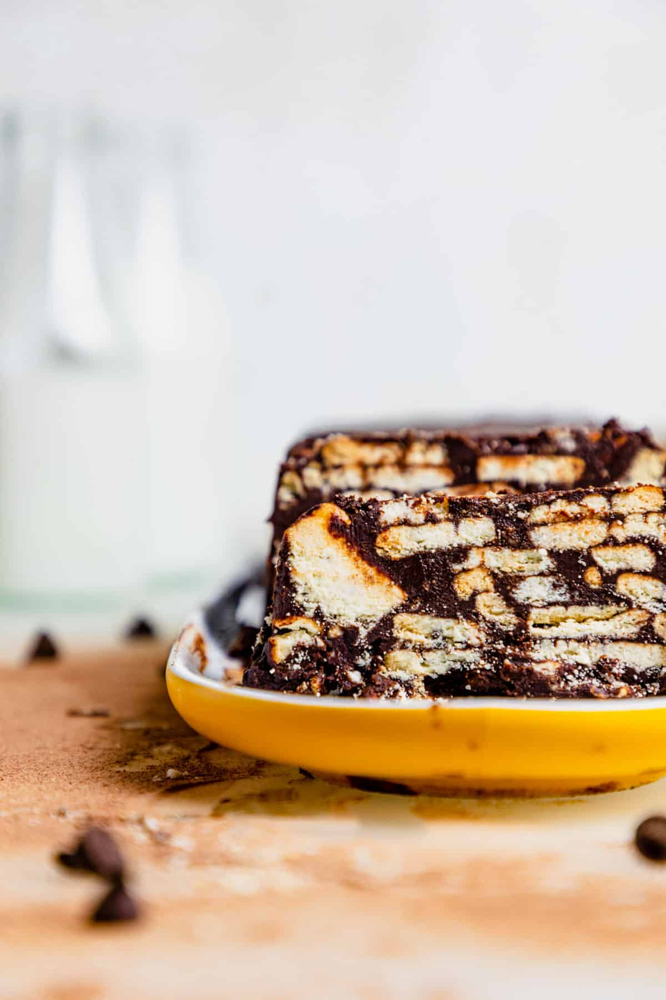

Lazy Cake

It's comforting. It reminds me so much of my childhood summers in Lithuania.A hot summer day meant that a cold slice of chocolate biscuit
cake would be so refreshing.Anyone can do it! You don’t need an oven or a mixer or any equipment at all. Makes for a great lunchtime snack,
especially because you can cut it as small as you like.
Ingredients
Servings: 10 slices
- 2 packs Marie biscuits (36 pieces), or digestive biscuits or graham crackers
- 1/2 cup butter, melted 100 g
- 6 tablespoon cocoa power
- 1 can sweetened condensed milk
Method
- Break the biscuits into large chunks and set aside. If making the lazy cake in a loaf pan, lightly grease a
loaf pan and line with parchment paper. (Alternately, you can roll the lazy cake up in aluminum foil to make
a salami type shape)
- In a large bowl, mix together the melted butter, cocoa powder and condensed milk until smooth and combined.
Add the biscuit pieces and fold to combine.
- Place the biscuit and chocolate mixture into the prepared loaf pan and freeze for 2-3 hours until set.
Or, place the mixture on a sheet of foil and squeeze into a log/cylindrical shape and freeze.
- Once firm, slice and enjoy. Store any extra slices in the freezer and enjoy anytime!